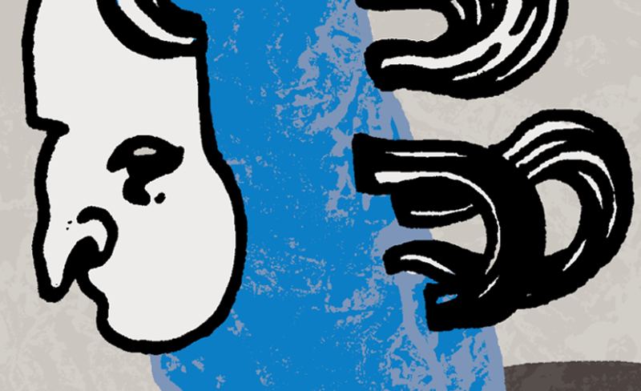

De Muzeskaart voor leraren!
Vanaf januari 2015 zullen alle betalende Muzesleden de gloednieuwe Muzeskaart ontvangen. Hiermee kunnen Muzesleden genieten van stevige kortingen bij Muzespartners, zoals BOZAR, De Bijloke, De Banier, (H)ART, Lucas Creativ, Piano's Maene, Poppunt, Schleiper, Staalkaart, ...
Op 6 januari verscheen de brochure met alle ledenvoordelen verbonden aan de nieuwe Muzeskaart, geïllustreerd door Els Peeters. U kunt deze brochure hier raadplegen.
Op deze pagina vindt u een overzicht met al onze partners die exclusieve voordelen bieden aan eigenaars van de Muzeskaart.
|